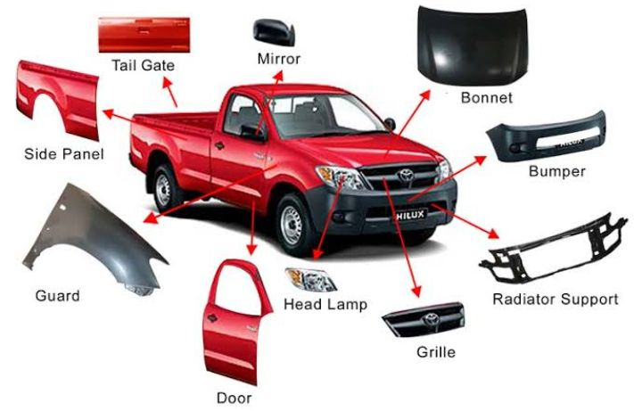

Great Truck & Auto Spares
Home Page Contacts About Us
Auto-Parts
At Great Trucks & Spares we have auto-body parts for most of the vehicles and trucks that are common in Southern Africa. For any
vehicle replacement parts, we hold the genuine parts that fits onto many vehicles and trucks. Despite being excellent in engine and
auto parts we are also seniors in dealing with vehicle body parts. Thus from:
Bonnets
Tail lights
Side view Mirrors
Rear View Mirrors
Head Lamps
Rear grill
Front grill
Complete car doors
Car Boot
Exhaust
Windscreens and door glass
Suspension Catalogue_View
Just naming a few and we have a whole lot of other items in stock for trucks and heavy trucks and private vehicles.


All auto body parts are in stock for all vehicles.
Truck Service & Suspension
Know your spare parts.

We have service kits for trucks and heavy vehicles including suspension for all vehicles. When you need to change shocks, tirerod ends
bushes, ball-joints, CV joints and steering racks we are the people to talk to.
Engine Oils & Lubricants
We stock and supply all types of oils and Lubricants thus from Engine oils, Break fluids, Engine Coolant, Dashboard sprays etc
Castrol Oil
Engen oils
GTX
Shell helix
Just naming a few popular brands and wehave the best break fluids, coolants, Gear Oils, ATF Fluids, and the list is endless.
Anti-Freeze Coolant
Also in stock are other lubricants, feel free to ask for your order and we will assist you in the best possible way.
Head Lamps

Come in and select your own head lamp. We have several designs andtypes for all model. Once your car has been involved in an accident
thou shalt not fear for we will come to your rescue.